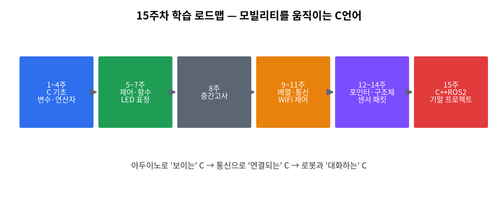

1주차 · 오리엔테이션 · 환경설정 · "왜 C인가"¶
C언어 · 미래모빌리티학과 | CLO1 | 교재 Ch01–02

학습 목표¶
- C언어의 위치와 특징을 설명하고, 컴파일 과정을 단계별로 이해한다.
- Visual Studio 2022 / Arduino IDE / (선택) Linux·gcc 환경을 구축한다.
- Git/GitHub로 과제 저장소를 만들고 첫 커밋을 push한다.
강의 해설¶
첫 주차의 핵심은 "C 문법을 얼마나 많이 외우는가"가 아니라, 앞으로 배울 C 코드가 어떤 길을 거쳐 실제 장비를 움직이는지 큰 그림을 잡는 것이다. 학생들은 보통 프로그래밍을 화면에 글자를 출력하는 활동으로 처음 만나지만, 모빌리티 분야에서 C는 센서값을 읽고, 모터를 제어하고, 로봇의 안전 동작을 결정하는 낮은 층의 언어로 쓰인다. 그래서 이 수업에서는 콘솔 프로그램, Arduino 보드, ROS2 로봇이 서로 다른 세계가 아니라 같은 C 사고방식 위에 놓인 단계라고 설명한다.
컴파일 과정은 처음에는 낯설지만, 오류를 읽기 위해 반드시 필요한 배경이다. #include 오류는 전처리 단계, 문법 오류는 컴파일 단계, 라이브러리 함수 오류는 링크 단계와 관련되는 경우가 많다. 학생이 "에러가 났다"에서 멈추지 않고 "어느 단계에서 막혔는가"를 말할 수 있으면, 이후 디버깅 속도가 크게 빨라진다.
환경설정은 지루해 보일 수 있지만 실제 수업에서는 가장 중요한 기반 공사다. Visual Studio는 C 문법을 안정적으로 연습하는 곳, Arduino IDE는 내 코드가 보드에서 동작하는 것을 확인하는 곳, Linux/gcc는 후반부 ROS2 환경으로 넘어가는 다리다. GitHub 저장소는 단순 제출함이 아니라 학기말 포트폴리오가 되므로, 첫 주부터 "코드와 실행 결과를 남기는 습관"을 강조한다.
3시간 강의 운영 포인트¶
- 0~30분: 수업 목표, 평가 방식, AI 사용 원칙, GitHub 제출 흐름을 먼저 설명한다. 학생들이 "이 수업이 단순 문법 수업이 아니라 모빌리티 SW 기초"라는 방향을 잡게 한다.
- 30~80분: C언어의 역할과 컴파일 과정을 화이트보드로 설명한 뒤,
hello.c가 실행파일이 되는 단계를 오류 사례와 연결한다. - 80~140분: Visual Studio, Arduino IDE, GitHub 저장소를 실제로 만들게 한다. 설치가 막힌 학생은 짝을 지어 해결하고, 강의자는 공통 오류를 즉시 모아 설명한다.
- 140~180분: 첫 빌드, 첫 업로드, 첫 커밋을 완료하게 한다. 마지막 10분은 "오늘 막힌 지점"을 제출하게 하여 2주차 시작 보충 자료로 사용한다.
강의 본문 보강¶
개념을 더 풀어 설명하기¶
처음 C를 배우는 학생에게는 "프로그램"이라는 말부터 분명히 해야 한다. 프로그램은 컴퓨터가 알아서 생각하게 만드는 것이 아니라, 사람이 정한 순서를 아주 정확하게 적어 둔 명령 목록이다. 그래서 C 수업의 첫 목표는 어려운 문법을 많이 외우는 것이 아니라, 내가 원하는 일을 컴퓨터가 따라 할 수 있을 만큼 작고 명확한 단계로 쪼개는 습관을 만드는 것이다.
프로그래밍 언어는 사람과 컴퓨터 사이의 번역 규칙이다. 기계어는 컴퓨터에게 가장 가깝지만 사람이 직접 쓰기 어렵고, Python 같은 언어는 사람이 읽기 쉽지만 하드웨어 제어의 세부를 숨기는 경우가 많다. C는 그 중간에 있다. 사람이 읽을 수 있는 문법을 쓰면서도 메모리, 주소, 비트, 장치 제어처럼 컴퓨터 내부에 가까운 개념을 직접 다룰 수 있다. 이 특성 때문에 모빌리티, 로봇, 임베디드 수업에서 C가 계속 중요하다.
라이브 설명 흐름¶
강의자는 먼저 Hello, Mobility! 한 줄 출력이 어떻게 실행되는지 큰 그림을 보여 준다. 학생에게는 코드가 바로 실행되는 것처럼 보이지만 실제로는 전처리, 컴파일, 어셈블, 링크를 지나 실행파일이 된다. 이때 #include <stdio.h>를 지우면 어떤 오류가 나는지, 세미콜론을 지우면 어떤 오류가 나는지 일부러 보여 주면 "오류 메시지는 적이 아니라 안내문"이라는 감각을 만들 수 있다.
학생 활동¶
- 자신의 말로 프로그램, 프로그래밍, 컴파일러, IDE를 각각 한 문장으로 정의한다.
Hello.c에서 문자열을 자기 이름이나 학과명으로 바꾸어 실행한다.- Visual Studio와 Arduino IDE에서 같은 문장을 출력해 보고, PC 프로그램과 보드 프로그램의 차이를 적는다.
- 설치 중 막힌 화면은 캡처해 GitHub 저장소의
week01폴더에 남긴다.
자주 막히는 지점¶
- C 수업인데 Visual Studio 설치에서 C++ 워크로드를 골라야 한다는 점을 헷갈린다.
- 파일 이름이
Hello.c가 아니라Hello.cpp가 되어 C 문법 실습과 다르게 동작할 수 있다. - Arduino 업로드 실패를 코드 문제로만 생각하지만, 실제로는 보드 선택, 포트 선택, USB 케이블 문제인 경우가 많다.
- GitHub push는 평가 제출이면서 동시에 학기말 포트폴리오가 된다는 점을 초반에 강조해야 한다.
1. 이론¶
1.1 프로그램과 프로그래밍¶
- 프로그램은 컴퓨터가 특정 작업을 수행하도록 차례대로 작성한 명령어의 모음이다.
- 프로그래밍은 프로그래밍 언어로 프로그램을 만드는 과정이다.
- 프로그래머는 문제를 해결하기 위해 처리 순서와 방법을 명령문으로 표현한다.
- ChatGPT 같은 인공지능 서비스도 결국 사람이 설계한 프로그램과 모델이 컴퓨터 위에서 실행되는 사례로 볼 수 있다.
1.2 프로그래밍 언어의 수준¶
| 구분 | 설명 | 예 |
|---|---|---|
| 기계어 | 컴퓨터가 직접 이해하는 0과 1의 명령 | 001101... |
| 저급 언어 | 하드웨어에 가까워 컴퓨터가 해석하기 쉬운 언어 | 어셈블리 |
| 고급 언어 | 사람이 읽고 쓰기 쉽게 설계된 언어 | C, Python, Java |
C는 고급 언어처럼 읽을 수 있으면서도 메모리 주소, 비트, 하드웨어 제어를 직접 다룰 수 있어 저급 언어의 장점도 함께 가진다.
1.3 C언어란 무엇인가¶
- 1972년 데니스 리치(Dennis Ritchie)가 UNIX 개발을 위해 만든 절차지향 언어.
- 특징: 하드웨어에 가까움(저수준 제어) + 이식성 + 빠른 실행 속도.
- 그래서 운영체제·임베디드·자동차 ECU·로봇 펌웨어의 기반 언어로 지금도 1순위.
1.4 C언어의 주요 특징¶
| 특징 | 수업에서 연결되는 내용 |
|---|---|
| 범용성 | 콘솔 프로그램, Arduino 펌웨어, ROS2 브리지까지 폭넓게 사용 |
| 간결한 표현 | 자료형과 연산자를 조합해 센서값, 속도, 상태를 짧게 표현 |
| 함수 기반 모듈화 | 판단 함수, 출력 함수, 제어 함수를 나누어 작성 |
| 이식성 | 같은 C 사고방식을 PC, 보드, Linux 환경으로 확장 |
| 포인터 제공 | 주소와 배열을 직접 다루며 고성능 데이터 처리 가능 |
| 라이브러리 기반 입출력 | printf, scanf_s, Arduino API처럼 필요한 기능을 불러 사용 |
| 하드웨어 제어 용이 | LED, 센서, 모터, 통신 장치를 직접 다루는 임베디드 실습으로 연결 |
왜 모빌리티에서 C인가 (2026)
자동차가 SDV(소프트웨어 정의 차량)·Physical AI로 진화해도, 실시간 제어 루프·센서 드라이버·모터 제어는 결정론적(deterministic) 으로 동작해야 한다. 이 계층의 표준이 C/C++다. "AI는 두뇌, C는 신경·근육." → 2026 트렌드 검토
1.5 컴파일 과정 (소스 → 실행파일)¶
hello.c ─(전처리)→ ─(컴파일)→ hello.s ─(어셈블)→ hello.o ─(링크)→ hello(실행파일)
#include 처리 C→어셈블리 어셈블리→기계어 라이브러리 결합
#include, #define 치환 |
| 컴파일(compile) | C 코드 → 어셈블리 |
| 어셈블(assemble) | 어셈블리 → 목적파일(.o) |
| 링크(link) | 목적파일 + 표준 라이브러리 → 실행파일 |
인터프리터(파이썬)는 한 줄씩 즉시 해석한다. C는 미리 통째로 번역해서 빠르다.
1.6 C 프로그램의 기본 구조¶
#include <stdio.h> // 전처리기: 표준 입출력 기능을 포함
int main(void) { // main: 프로그램이 시작되는 함수
printf("Hello, Mobility!\n");
return 0; // 0 = 정상 종료
}
#include <stdio.h> : printf를 쓰기 위한 선언 포함.
- int main(void) : 모든 C 프로그램의 시작점.
- return 0; : 종료 코드(0=성공).
1.7 개발환경 4종¶
| 환경 | 용도 |
|---|---|
| Visual Studio 2022 | PC에서 C 작성·컴파일·디버깅(주력) |
| Arduino IDE 2.x | 보드(UNO R4 WiFi)에 업로드 |
| Tinkercad | 회로와 Arduino 기초 입출력 시뮬레이션 |
| Linux + gcc(선택) | 명령줄 컴파일, ROS2의 기반(후반부) |
자세한 설치 순서는 환경 설정 상세 가이드를 따른다.
2. 핵심 용어 정리¶
| 용어 | 설명 |
|---|---|
| 컴파일러 | 소스코드를 기계어로 번역하는 프로그램 |
| 링커 | 목적파일·라이브러리를 묶어 실행파일을 만드는 단계 |
| IDE | 편집·컴파일·디버깅 통합개발환경 |
| 소스/목적/실행 파일 | .c / .o(.obj) / 실행파일 |
| 프로젝트 | 소스 파일과 빌드 설정을 묶은 작업 단위 |
| 표준 라이브러리 | stdio.h 등 기본 제공 함수 모음 |
| 펌웨어 | 하드웨어(보드)에 올라가 동작하는 SW |
| SDV | Software-Defined Vehicle |
| Git/commit/push | 버전관리 / 변경 기록 / 원격 업로드 |
3. 실습¶
실습 1-1 · VS2022 첫 빌드¶
빈 프로젝트 → 소스 파일 추가 → Hello.c 생성 → 빌드·실행 → Hello, Mobility! 확인.
Visual Studio에서 꼭 확인할 것
C 수업이어도 설치 워크로드는 C++를 사용한 데스크톱 개발을 선택한다. 새 파일을 만들 때 항목은 C++ 파일을 골라도, 파일 이름은 반드시 .c 확장자로 저장한다.
실습 1-2 · gcc 컴파일(선택, Linux/WSL)¶
실습 1-3 · 아두이노 첫 출력¶
실습 1-4 · GitHub 과제 저장소¶
개인 저장소 생성 → add → commit → push. 학기말 포트폴리오가 된다.
실습 1-5 · 설치 체크리스트¶
환경 설정 상세 가이드의 1주차 제출 체크리스트를 확인하고, Visual Studio 실행 화면, Arduino 보드/포트 선택 화면, Hello 실행 결과를 캡처한다.
4. 과제¶
- 설치 스크린샷·보드 인식·
Hello출력 → GitHub에 push. - Visual Studio에서 줄 번호 표시, 프로젝트 저장 위치, 콘솔 실행 방식(
Ctrl + F5)을 설정한다.
5. 참조¶
- 교재 Ch01–02
- C 레퍼런스 https://en.cppreference.com/w/c · Arduino https://docs.arduino.cc/ · Git https://docs.github.com/get-started
- 설치: Visual Studio Community · Arduino IDE · Tinkercad
형성평가 체크포인트¶
- 프로그램/프로그래밍 구분 · [ ] 컴파일 4단계 설명 · [ ] 첫 빌드 성공 · [ ] Arduino IDE 업로드 · [ ] GitHub push · [ ] "C가 왜 중요한가" 한 문장
연습문제¶
먼저 스스로 풀고 정답을 펼쳐 확인하세요.
- 컴파일 단계의 순서로 옳은 것은? ① 전처리 → 컴파일 → 어셈블 → 링크 ② 컴파일 → 전처리 → 링크 → 어셈블
#include <stdio.h>를 쓰는 이유는 무엇인가? (단답)- (OX) C는 한 줄씩 즉시 해석하는 인터프리터 언어다.
hello.c를 gcc로 컴파일해 실행파일hello를 만드는 명령을 쓰시오.- Visual Studio에서 C 수업을 위해 선택해야 하는 워크로드는 무엇인가?
정답 및 해설
- ① — 전처리→컴파일→어셈블→링크.
printf등 표준 입출력 함수의 선언을 포함하기 위해.- X — C는 미리 통째로 번역하는 컴파일 언어.
gcc hello.c -o hello(실행:./hello)- C++를 사용한 데스크톱 개발 — C 컴파일 도구가 이 워크로드에 포함되어 있다.
🖼 그림으로 복습 — 15주 학습 로드맵에서 지금 위치